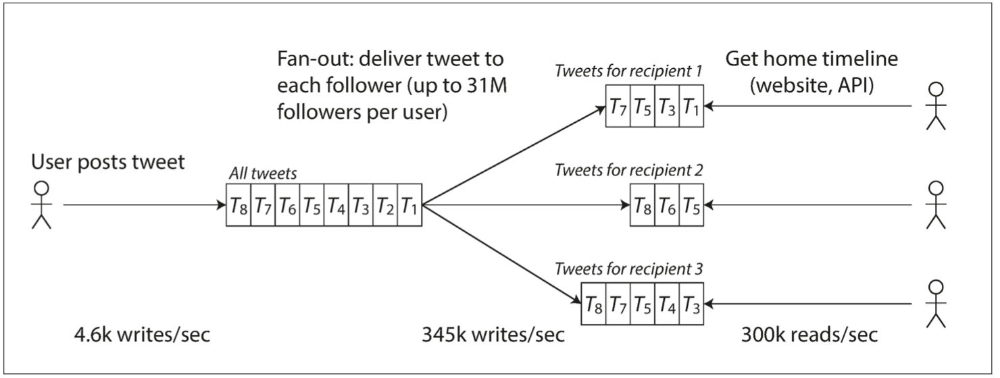

可靠、可扩展、可维护的应用系统
当前许多新型应用都属于数据密集型，而不是计算密集型。
本节主要讨论：可靠性、可扩展性和可维护性。
数据密集型应用系统，CPU处理能力往往不是第一限制性因素：
- 限制性因素在于数据量、数据的复杂度和数据的多变性。
数据密集型应用系统通常也是基于标准模块构建而成，每个模块负责单一的常用功能。如许多应用系统都包含以下模块：
- 数据库：存储数据，应用可以再次访问；
- 高速缓存：缓存复杂或代价高的结果，加速下一次访问；
- 索引：按关键字搜索或者过滤，加速访问；
- 流式处理：持续发送消息至另一进程，处理采用异步方式；
- 批处理：定期处理大量的累计数据；
- 消息队列：消息的订阅和发送
认识数据系统
近年来许多用于数据存储和处理的新工具针对不同应用场景进行优化，不适合再归为传统类型\(^{[1]}\)，系统之间的界限正在模糊：
- Redis 既可以用作数据存储，也适用消息队列；
- Kafka 作为消息队列，也具备持久化存储保证。
应用系统需求广泛，需要组合多个组件，每个组件完成部分功能，多个组件依靠应用层代码驱动有机结合。
- 示例应用系统，包含缓存和全文索引，二者与数据库保持关联，通常由应用代码负责缓存、索引和主库的同步，其架构如下图所示

这么一个小系统，在设计时，就可以有很多取舍：
- 如何保证缓存和DB的一致性，Cache Aside 或 Writre Through 还是？
- 部分组件机器出现问题时，是保证可用性还是保证一致性？
- 当机器一时难以恢复，如何保证数据的正确性和完整性？
- 当负载增加时，是增加机器还是提升单机性能？
- 设计对外的 API 时，是力求简洁还是追求强大？
书中用了三个词来回答：可靠性（Reliability）、可伸缩性（Scalability）、可维护性（Maintainability）
可靠性
容错（fault-tolerant）或 弹性（resilient）
- 容忍特定类型的故障/错误，软件而不失效（failure）。.
硬件故障
通常认为多是相互独立的
- 硬盘崩溃、内存故障、电网停电、网线误拔等；
- 硬盘的平均无故障时间（MTTF）约为10年 ~ 50年\(^{[1]}\)；
- 硬件冗余：RAID、双电源、热插拔CPU等；
- 系统强调总体灵活性和弹性而非单台机器的可靠性；
- 软件容错的方式容忍多机失效是有力的补充和新的手段；
软件错误
系统内软件系统更难预料，往往会导致更多的系统故障：
- 特定场景的的崩溃，比如2012年6约30日Linux内核闰秒的处理BUG\(^{[2]}\)；
- 共享资源使用异常，如CPU、内存、磁盘、网络使用失控跑飞；
- 依赖的服务变慢或者异常；
- 级联故障，有一个组件小故障引起另一个组件故障；
系统软件通常对使用环境存在某种假设，在特定的情况下，假设条件变得不在成立。
沒有快速解决方法，只能考虑更多的细节：
- 认真检查依赖的假设条件；
- 进行全面的测试；
- 进程隔离，允许进程崩溃后自启动；
- 监控并分析生产行为，异常检测等；
人为错误
互联网服务中，运维的配置错误是系统下线的首要原因\(^{[3]}\)。
假定人是不可靠的，如何保证系统的可靠性？
- 以最小出错的方式来设计系统，如精心设计抽象层、API层和管理界面，限制与平衡；
- 想办法分离出最容易出错的地方，提供沙箱/类生产环境；
- 充分的测试，自动化测试；
- 人为失误时，快速的恢复机制以尽量减少故障影响；
- 设置详细而清晰的监控子系统，包括性能指标和错误率；
- 推理管理流程并加以培训，良好的操作文档等；
可扩展性
可扩展性是描述系统应对负载增加能力的术语。
描述负载
负载用称为负载参数的若干数字来描述，取决于系统的体系结构：
- Web服务器的每秒请求处理次数；
- 数据库中读写的比例和次数；
- 缓存命中率、同时在线人数等；
以推特在 2012 年 11 月发布的数据\(^{[6]}\)为例。推特的两个主要业务是：
- 发布Tweet消息：用户可以快速推送新消息到所有关注者，平均大约4.6k request/sec，峰值约12k request/sec；
- 主页时间线（Home timeline）浏览：平均300K request/sec 查看关注对象的最新消息；
推特的伸缩性挑战来自 扇出（fan-out）：每个用户关注了很多人，也被很多人关注。
一般有两种思路：
-
拉取：将发送的新的 tweet 插入到全局的 tweet 集合。当用户查看时间线时，首先查找所有的关注对象，列出这些人的 tweet，最后一时间为序将进行排序合并。
-
用户只有查看时才会去拉取，但是每次查看时现去拉取，呈现速度较慢；
# SQL code
SELECT tweet.*, user.* FROM tweets JOIN users ON tweets.sender_id = users.id
JOIN follows ON follows.followee_id = users.id
WHERE follows.follower_id = current_user

-
推送：对每个用户的时间线维护一个缓存，类似每个用户一个 tweet 邮箱。当用户推送新 tweet 时，查询其关注者，将 tweet 插入到每个关注着的时间线缓存中
-
读取主页时间线的请求开销很小，因为结果已经提前计算好；
- 写放大：粉丝多的人发的一个 tweet 会导致 3000 万笔写入，对于响应性能/存储是挑战；

Tweet 后面采用方法2，效果更好，因为发推频率比查询主页时间线的频率几乎低了两个数量级。
- 推特尝试在 5 秒内向粉丝发送推文：3000 万的粉丝大 V 的推文导致主页时间线缓存的 3000 万次的及时写入
关键点：每个用户者的分布情况（可以结合用户使用频率进行加权）是可扩展的关键负载因素。
- 大多数用户发的推文会被扇出写入其粉丝主页时间线缓存中，海量粉丝的用户（即名流）除外；
- 当用户读取主页时间线时，分别地获取出该用户所关注的每位名流的推文，再与用户的主页时间线缓存合并；
描述性能
- 负载增加，系统资源不变，系统性能如何变化？
- 负载增加，如果要保持性能不变，需要增加多少资源？
性能指标：吞吐量（离线），响应时间（在线）。
响应时间通过百分位数表示，p95（90%），p99（99%），p999（99.9%）；
- 百分位数用来定义服务质量目标（SLO）和服务质量协议（SLA）；
- 响应时间的高百分位点（也称为 尾部延迟，即 tail latencies），直接影响用户的服务体验
- 研究表明，1s的延迟增加等价于客户满意度下降16%\(^{[4]}\)；
排队延迟（queueing delay） 通常占了高百分位点处响应时间的很大一部分。
- 头部阻塞（head-of-line blocking）：服务器只能并行处理少量的事务（如受其 CPU 核数的限制），只要有少量缓慢的请求就能阻碍后续请求的处理
应对负载增加
-
垂直扩展（scaling up）：更强大的机器；
-
水平扩展（scaling out）：更多的机器；
超大规模的系统往往针对特定应用而高度定制，很难有一种通用的架构。
- 每秒处理10w次请求（大小1KB），与每分钟3个请求（大小2GB）设计的系统大不相同；
- 扩展能力好的架构通常会做出某些假设，有针对性优化设计，哪些操作频繁、那些负载少数？；
可维护性
软件的大部分成本，在于整个生命周期内持续的投入，包括维护与缺陷修复、监控系统正常云习惯、故障排查、适配新平台、增加新功能等。
软件设计时，尽可能减少维护期间的麻烦：
可运维性
良好的可操作性
- 提供对系统内部运行时行为和内部的可观测性，方便监控；
- 支持自动化，与标准工具集成；
- 避免绑定特定的机器，系统不间断运行同时允许机器停机维护；
- 提供良好的文档和易于理解的操作模式，如“如果我做了X，会发生Y”；
- 提供良好的默认配置，且允许管理员在需要时方便地修改默认值；
- 尝试自我修复，同时提供手动方式控制系统状态；
简单性
简化复杂度，复杂性使得维护变得越来越困难，导致预算超支和开发进度滞后；
- 复杂性：状态空间膨胀、模块紧耦合、相互依赖、不一致的命名和术语、特殊逻辑和特殊框架\(^{[5]}\)；
- 复杂性被定义为一种“意外”，非软件固有，用户不感知，而是实现本身所衍生出来的问题；
- 消除意外复杂性最好的手段之一是抽象；
可演化性
易于改变，想法和目标经常在不断变化：新功能、新环境、法律安全性、业务架构变化；
“可演化性”：描述数据系统级的敏捷性：
- 简单性高的系统通常比复杂的系统更容易修改；
- 敏捷开发模式和相应的技术(TDD/重构)可以带来一些帮助；
参考文献
- Brian Beach: “Hard Drive Reliability Update – Sep 2014,” backblaze.com, September 23, 2014.
- Nelson Minar: “Leap Second Crashes Half the Internet,” somebits.com, July 3, 2012.
- David Oppenheimer, Archana Ganapathi, and David A. Patterson: “Why Do Internet Services Fail, and What Can Be Done About It?,” at 4th USENIX Symposium on Internet Technologies and Systems (USITS), March 2003.
- Tammy Everts: “The Real Cost of Slow Time vs Downtime,” webperformancetoday.com, November 12, 2014.
- Rich Hickey: “Simple Made Easy,” at Strange Loop, September 2011.
- Raffi Krikorian: “Timelines at Scale,” at QCon San Francisco, November 2012.